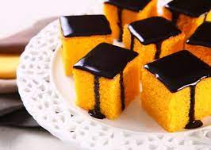

A cenoura é um alimento versátil que pode ser preparada de diversas formas: cozida para fazer purê ou sopa, no forno com outros legumes, crua e ralada para salada, no preparo de pães ou bolos e crua para sucos e vitaminas também. É um alimento que pode estar presente no seu dia-a-dia de diversas formas!
No liquidificador, coloque as cenouras, o óleo, os ovos e o açúcar.
Deixe bater até triturar bem. Aos poucos, acrescente a farinha até
obter uma massa homogênea. Junte o fermento e bata com delicadeza,
só para misturar
Despeje a mistura numa forma retangular, de
cerca de 32 x 23 centímetros, untada com gordura e farinha. Asse
em forno médio (180 graus) preaquecido por 45 minutos ou até firmar.
Para ter certeza, faça aquele teste do palito. O objetivo é que a massa
não deixe o palito melado
Espere o bolo esfriar para preparar a cobertura. Misture todos os ingredientes numa panela e leve ao fogo médio até ferver. Coloque a calda sobre o bolo e, quando ela endurecer, corte em quadradinhos para servir
